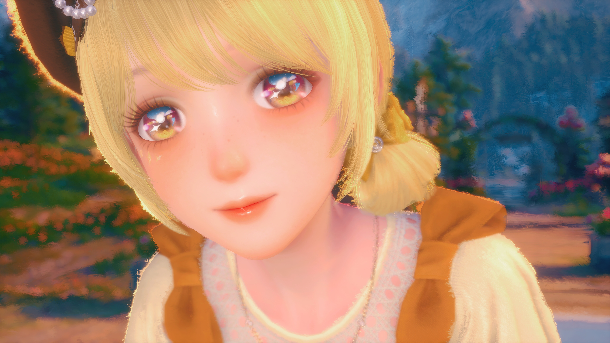

《无限暖暖》采用UE5引擎打造，美术风格融合“写实质感”与“奇幻治愈”，以下是核心美术亮点：

场景：自然质感拉满
花海的花瓣纹理、湖水的波光反射，均通过UE5的Lumen光追技术实现，不同时间（早/中/晚）的光影会实时变化。

服装：材质真实还原
丝绸的光泽、布料的褶皱、蕾丝的通透感，都通过PBR材质系统精准呈现，甚至能看到针脚的细节。

角色：微表情生动
苏暖暖与NPC的表情会随对话情绪变化（如开心时眼角弯起、困惑时皱眉），提升代入感。